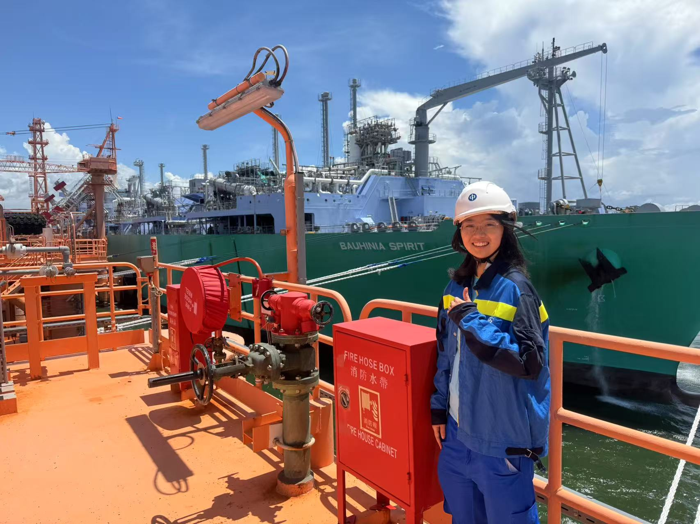
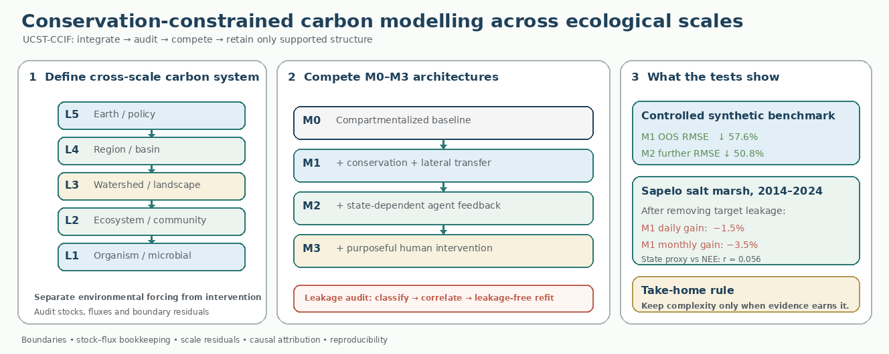
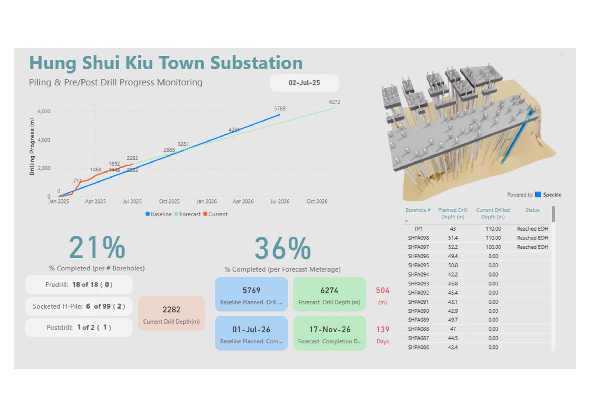
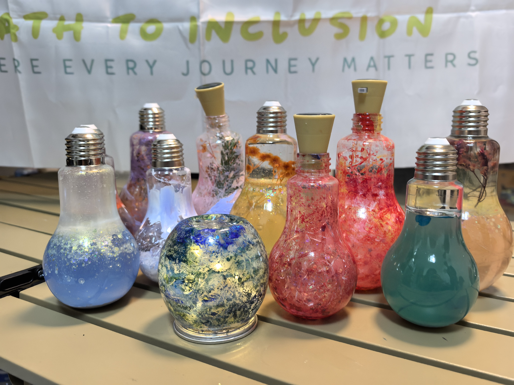
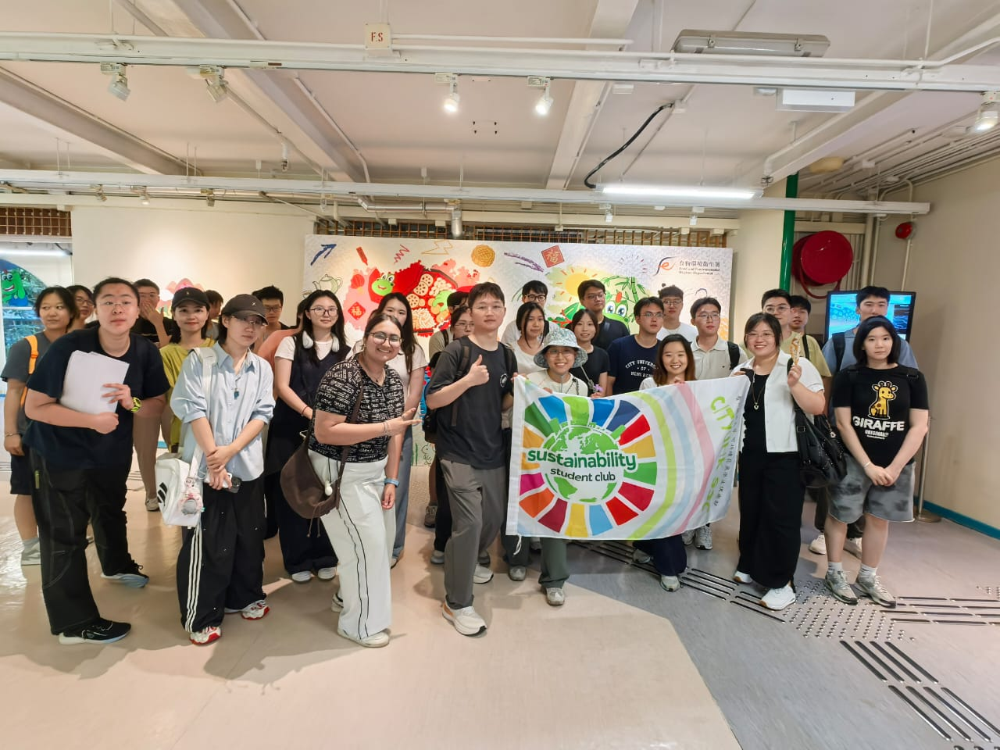
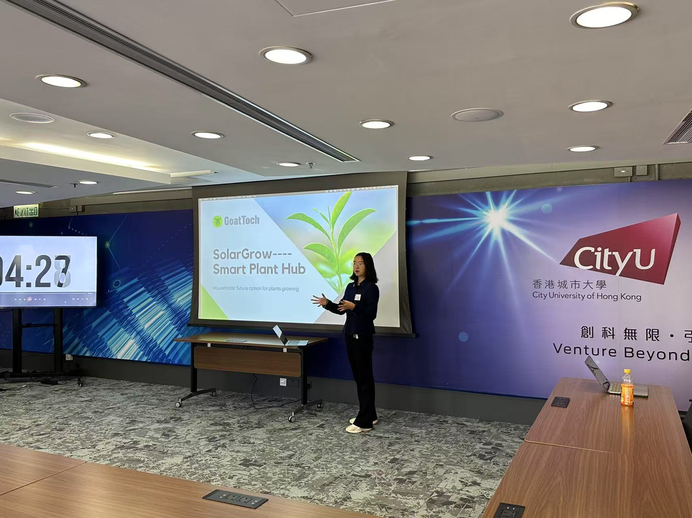
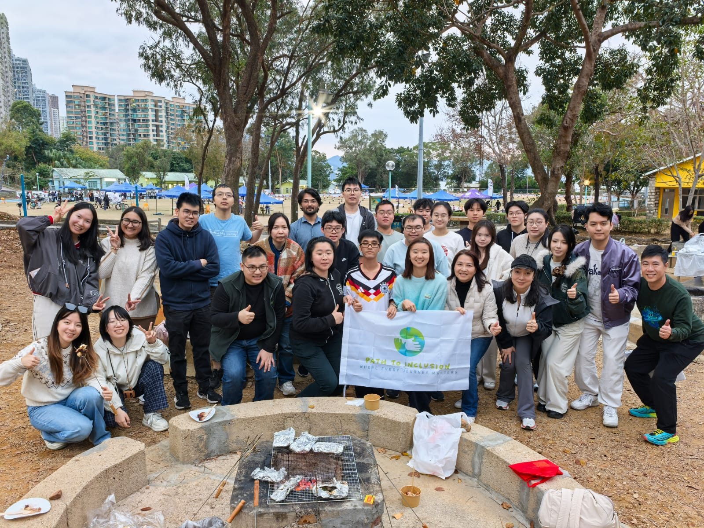
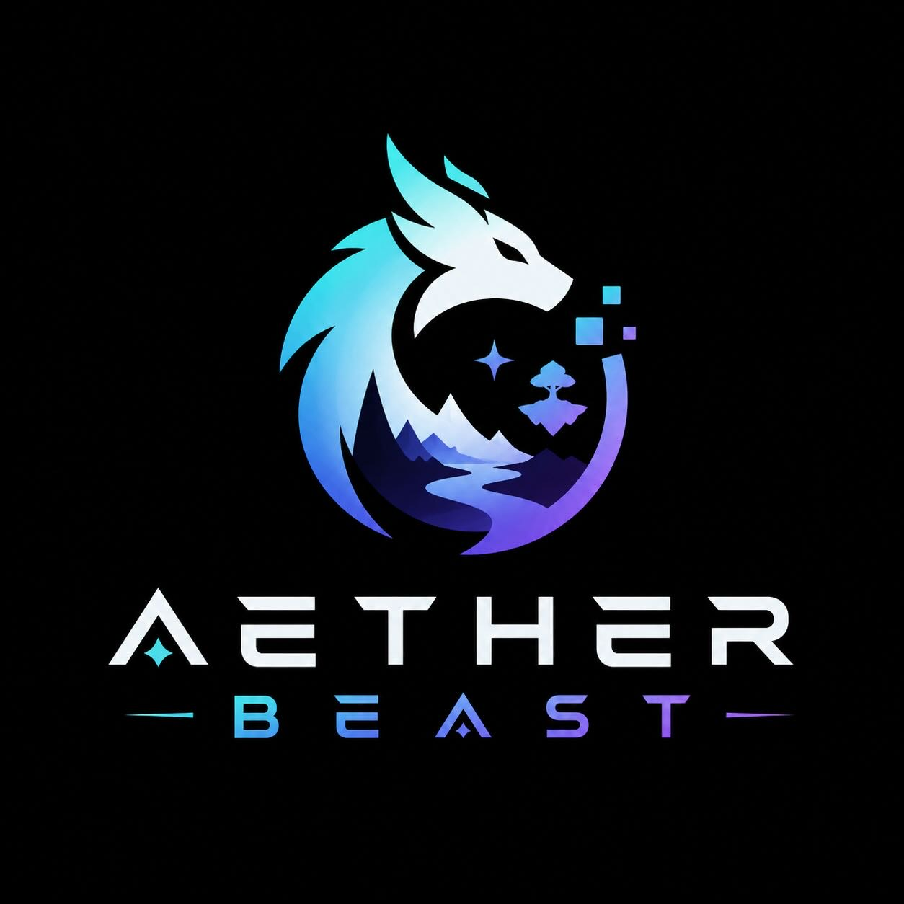
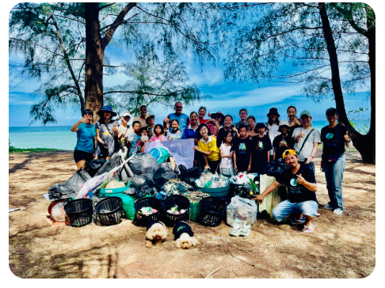

我是刘迎格（Linda），一名应届能源工程师、可持续发展创业者与写作者，专注环保产品设计、氢能与碳利用研究。我把气候的硬核数学，转化为人们可以相信的技术与故事。
毕业设计：光伏间歇性下负载相关 PEM 电解与太阳能制甲醇的域约束优化（Load-Dependent PEM Electrolysis and Domain-Constrained Optimisation of Solar-to-Methanol Production under Photovoltaic Intermittency）
我在内陆长大，离海很远。第一次下海游泳是在北京附近的海滩，那年八岁——我走出水面时，一只黄蝴蝶轻轻落在我头上。那一刻，大海对我而言是无边无际的：美丽、脆弱，又充满生机。
后来我去普吉岛上中学，海边走路五分钟就到。我亲眼看见珊瑚白化、塑料堆积在无人清理的沙滩上、海岸线年复一年被侵蚀。我开始组织海滩清理、领导环保社，从此再没停下。现在我在香港读能源工程——又一座被红树林环绕的海滨城市——把这份紧迫感转化为环保产品设计、氢能与碳利用系统，因为数学是无情的：即使我们明天就停止排放，已经在大气中的 CO₂ 仍会让地球变暖数十年。我们等不起。
「世界很大，个人的力量看似渺小——但我仍愿做那个奋力前行的人。」

从普吉岛的海滩清理，到西湖大学，再到城大能源工程——每一步都把我引向下一站。最新在前。
端到端负责每个项目——从产品概念到 WISE 市集现场销售，从路演 PPT 到 HK Tech 300 半决赛。
跨领域自学者：Python、Power BI、Revit、视频剪辑与内容设计——项目需要什么就学什么。
创建并带领 300+ 会员的可持续发展社团；环保内容触达 700+ 受众；主持 10+ 场 SDG 活动。
以 TAM/SAM/SOM 市场规模测算、SDG 对齐规划与数据驱动决策贯穿每个项目。
一年实习中管理风险登记册与合同流程；能源审计在浪费变成成本之前发现它。
联合国可持续发展目标是我选择下一步方向的记分卡——点击任一目标即可筛选出对应项目，也可以打开任何项目查看附实地照片的详细总览。
生命周期分析与排放仪表盘，加速向低碳电力转型。
Path to Inclusion 让志愿活动向所有人开放——包括 SEN 学生。
Access CityUHK 众包校园无障碍；GoatTech 试点城市碳创意。
"Sustain" 系列把咖啡渣、纸张与玻璃变成可售的循环商品。
西湖大学的碳通量 UCST 建模，量化我们必须清除的 CO₂。
从普吉岛海滩清理到离岸 LNG——海岸健康是我的主线。

在西湖大学崔维成教授指导下独立开展研究。用 Python 构建碳生态模型，在守恒约束的统一复杂系统理论下跨生态尺度整合碳通量。

一年实习 · COO 管理办公室 / 项目执行团队，中华电力有限公司 — 导师：Lee Tsz Laam Kevin、Cheuk Ming Leung、Au Yeung Stephen Tsz Man。生命周期分析、Power BI 排放仪表盘、用于风险登记与合同管理的 Copilot Studio AI 代理，以及统一工程、运营与 IT 的资产信息管理系统。

以循环经济为内核的手作环保产品线：再生纸种子明信片、咖啡渣香皂、升级再造玻璃灯与流沙摆件——在 WISE 市集端到端设计、生产、品牌化并销售。

担任主席。每年 10+ 项 SDG 活动：狮子山清理远足、咖啡蜕变工作坊、农场日、二手市集——联合企业伙伴与本地 NGO。
校园 LEAD 计划项目。构建众包平台，让每位学生都成为无障碍审计员：QR 标签校园设施、30 秒内移动端上报、FMO 用 Power BI 仪表盘、AI 预测性维护。


联合创立。整合分散的志愿机会，与本地中学共同设计向所有人开放的活动——包括 SEN 学生。鱿鱼之夜、共融 BBQ、读书会、圣诞庆祝。


一个完整的清单——点击任意一行即可打开照片、文件或模型。
| Item | Details | Year |
|---|---|---|
| 精神健康急救（MHFA）认证 | 证书 · 12 小时 MHFA 标准课程 · 由香港心理衛生會签发（获澳洲 Mental Health First Aid International 授权） | Sep 2026 |
| 心理健康急救大使 | 证书 | Sep 2026 |
| 西湖大学 暑期科研 | 实习证书 · 入选邀请 · 科研照片 | 2026 |
| 新加坡国立大学青年奖学金项目 — AI 证书 | 证书 · 项目照片 | 2026 |
| 半程马拉松完赛 | 证书 · 完赛照片 · 慈善跑 · 比赛日 · 慈善跑（过往） | 2026 |
| 城大可持续发展学生社团 主席 | 认证 · SDS 学习徽章 1 · SDS 学习徽章 2 · SDS 学习徽章 3 | 2025 – Now |
| 工作与推荐信 | 中电 — Au Yeung Stephen Tsz Man · 项目保证与氢能研究 · 中电 — Lee Tsz Laam Kevin · 数字化转型与 AI · 学术 — Patrick Sit 教授 · SEE 副院长 | 2025–26 |
| Top 10 · SDG 生成式 AI 黑客松 | 团队照片 · 香港大学 | 2025 |
| Top 10 · 百雀羚 AIGC 创意设计大赛 | 证书 1 · 证书 2 · 入围作品 · 海报 | 2025 |
| Microsoft 数据分析核心技能 | 证书 | 2025 |
| 大数据挑战赛 | 证书 | 2025 |
| 志愿服务与社区 — 有机农场与社区贡献 | 照片 1 · 照片 2 · 照片 3 · 社区贡献 | 2025 |
| 建造業安全訓練證明書 — “綠卡” | 证书 · 依据《工厂及工业经营条例》第 6BA(2) 条签发 · 有效期至 23/06/2028 | 2025 |
| 第十五届「全国海洋知识竞赛」香港区选拔赛 — 复赛入围（大专生组） | 复赛入围证书 · 大专生组 | 2025 |
| HKIE 学生会员 | 会员卡 · HKIE 活动证书 | 2024–25 |
| Top 10 · WGO 世界绿色组织 社会创新发明「創」科社区 概念空间设计大赛 | 世界绿色组织 · 证书 · 活动 1 · 活动 2 · 设计 | 2024–25 |
| 绿色技能实验室（Green Upskilling Skills Labs） | 证书 | 2024–25 |
| 香港能源学会（EIHK）学生大使 24/25 — 获选成员 | 大使照片 | 2024–25 |
| 高级商业研讨会 — 主动学习奖 | 主动学习奖证书 · 城大高级商业研讨会 | 2024–25 |
| 城大女子足球队 — 银牌 · 香港校际赛 | 球队 · 比赛 | 2024–25 |
| 北京循环经济协会 — 暑期实习 | 实习证书 | 2024 |
| Prozparity — 混合实习（可持续发展与数据） | 办公室照片 · prozparity.com | 2024 年 5–8 月 |
| 香港特別行政區政府獎學基金 - 才藝發展獎學金 | 证书 | 2024 |
| 《5G及綠色科技生活》全港學生數位繪圖比賽 2024 — “5G & Green Technology Life” All-HK Student Digital Drawing Competition | 证书 | 2024 |
| 青年气候峰会 2024 — 学校代表 | 照片 1 · 照片 2 · 照片 3 · 照片 4 · 照片 5 · 照片 6 · 照片 7 | 2024 |
| 城大 × 中华电力 能源审计培训 — 获选成员 | 审计营照片 | 2024 |
| AI 与数据科学奥林匹克（IDSOL）— 建筑咨询原型 | AI 建筑改造咨询系统：改造建议、全生命周期碳减排与可持续材料选择。 · GitHub | 2024 |
| 太阳能温室 — Revit / Dynamo / Navisworks 模型（北京） | 集成光伏 + 自动化气候管理 · BIM 设计（Revit / Dynamo / Navisworks） · 太阳能温室报告 | 2024 |
| 第十届泰国模拟联合国 — 曼谷 | 代表会议 · 委员会会场 · THAIMUN 欢迎合影 | 2023 |
| 喀图半程马拉松 — 10.5K 完赛 | 奖牌与号码布 · 喀图半程马拉松 2022 · 普吉岛 | 2022 |
| LinkedIn Learning — 7 张证书 | Become a Teacher · AI-First Product Leader · Communication Foundations · Computer Components · LMS Foundations · GenAI 研究与写作 · 专注力训练 | 2023–25 |
| 青年工程师秋季课程 2020 — 剑桥大学 | 课程证书 | 2020 |
| 设计及科技作品集（IGCSE） | 设计及科技作品集（IGCSE） · 水培种植装置 | 2020 |